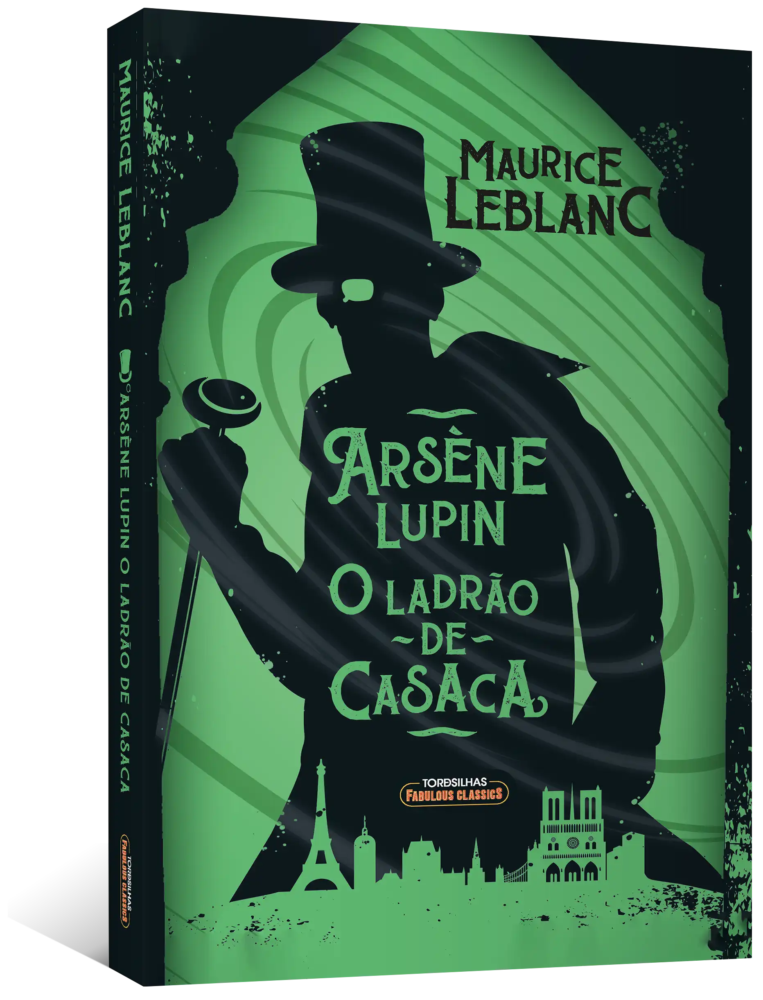

 Assane Diop é o personagem principal e protagonista da primeira parte de Lupin. Ele é retratado por Omar Sy, enquanto sua contraparte de 14 anos é retratada por Mamadou Haidara, respectivamente. Ele usa o mundialmente famoso ladrão e mestre do disfarce, Arsène Lupin, como sua inspiração. "Você me viu, mas não olhou"